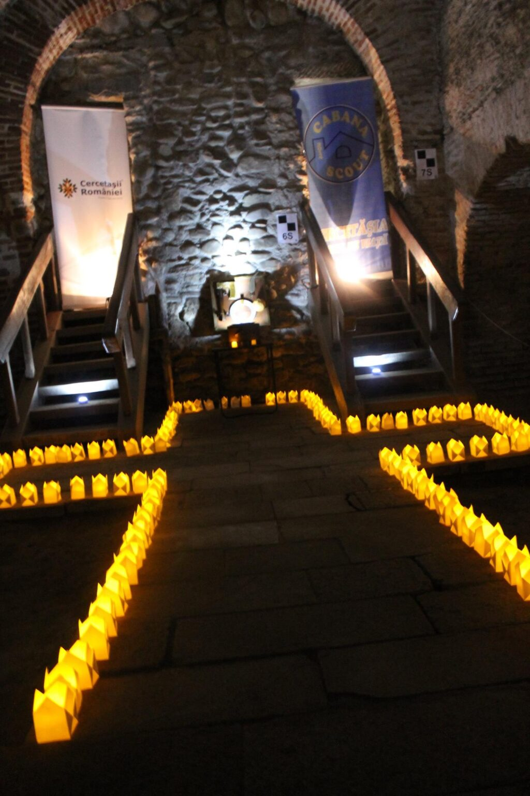

Amintiri de la Promisiunea 2015

În data de 18 aprilie, Cabana Scout a organizat cea de-a doua ceremonie de depunere a promisiunii din istoria grupului nostru. Cu această ocazie, 9 cercetaşi şi-au primit eşarfele de temerar, explorator şi respctiv senior. Având în vedere emoţia şi importanţa momentului, am îndemnat noii cercetaşi să îşi aştearnă în scris amintirile cu care au rămas de la acest eveniment şi astfel ne-am ales cu textul care urmează, scris de Evelyne, mezina seniorilor noştri.
***
06:30 Ma ridic din pat deja agitata. Arunc o privire catre camasa albastra de pe umeras, un fior cald ma trece iar prin tot corpul. Ma agit prin casa, nefacand nimic, nu mananc, nu ma imbrac… doar repet non-stop “Promit, cu ajutorul lui Dumnezeu, pe onoarea mea, sa fac tot ce imi sta in puntinta pentru: a-mi indeplinii datoria fata de Dumnezeu, si fata de tara; a-i ajuta pe ceilati in orice situatie; a respecta Legea Cercetasului!” Si repet, si repet iar, si iar repet. Suntem 5 seniori… trebuie sa ne sincronizam, sa nu se auda urat, trebuie sa o zic perfect, cuvant cu cuvant. La ora 7:00 suna telefonul. Alarma “Promisiune” suna. Nu pe bune?! Inca un factor care sa ma streseze, trecuse jumatate de ora fara sa simt. Intr-un final sunt gata. Plec. Repet promisiunea pe drum. Recitesc rugaciunea, dar aici totul e in regula. Ajung la Hanul lui Manuc cu jumatate de ora mai devreme.
Mi s-a parut genial ca Adi ne-a pus sa cautam locuri, desi, daca eram singura… in centru vechi ramaneam! Eram emotionata rau, rau. Primul punct a fost Manastirea Stavropoleos. Arata superb, gradina parca era din alta lume- ma rog, era … nu mai iesisem de 2 luni din casa. Dupa, ne-am intalnit cu Marius, cu care am jucat niste jocuri dragalase. Pas cu pas momentul se apropia. Desi faceam lucruri amuzante, asteptarea combinata cu emotiile imi provocau o stare de nervozitate.
Ora 11:00. Pregatirile nu sunt gata. Noi asteptam… repetam promisiunea, noi, exploratorii si seniorii, Cristiana parea sigura pe ea. Jucam “Corabia nebunilor” cand Petre il cheama pe Marius jos. “Mai e putin!” m-am gandit eu. Dupa putin timp, Petre reapare. Am intrat doi cate doi. De sus, imi imaginam totul ca fiind o incapare mica, meschina. Cand am intrat, nu am putut sa ma gandesc la cat de mare sau mica era de fapt incaperea. Era bezna totala, dar pe jos, plin de lumanari. Inaintam si fiori calzi si reci imi traversau corpul, inainte si inapoi, de parca cautau un loc prin care sa iasa. Am trecut pe langa cativa cercetasi ce tineau stragurile, apoi ne-am asezat in linie. Atunci s-a facut prezenta. Dar nu ca la scoala. In loc de “prezent” noi strigam “iata-ma”. A fost amuzat, ca unul dintre noi a spus “iarta-ma”. Am ras usor cu Ana. Dupa, ne-am asezat. Adi si cu Petre ne-au vorbit. Am spus toti rugaciunea.
Promisiunea propiu zisa incepea. Cristiana era prima, depune la temerari. In timp ce ea isi rostea promisiunea, simteam ca pic de emotie. Am intins mana stanga in spate si am cautat usor mana Anei. Ea mi-a raspuns cu o strangere puternica. Defapt, asa am ramas pana la final: ne strangeam una pe alta. Dupa ce Cristiana termina, inainteaza spre Adi, care ii da esarfa, urmand sa-si dea mainile (stangi, ciudat), iar cu dreapta sa se salute cercetaseste. Apoi se duce la Petre, se saluta. Cand se intoarce cu fata spre noi, obserc ca are o lumanare in mana. Incep si exploratorii promisiunea. Le-a iesit perfect. Eram absorbita de acel cadru armonios. Boltele, lumanarile… era spectaculos. Aceeasi ptocedura. De la Adi esarfa, de la Petre acea… lumanare, care nu era lumanare. Incepem noi. Am impresia ca ne-am cam balbait. Mie una, capul imi zvacnea, genunchii imi erau moi, iar vocea imi tremura. Ajunsa langa Adi, acesta imi sopteste zambind “Bun venit in Marea Familie a cercetasilor!”. “Familie, suna atat de cald” mi-am zis eu. Fac doi pasi mai la stanga si sunt langa Petre. Ne salutam. Realizez ca “lumanarea” reprezinta defapt o cutiuta oregami, dragalasa. In final am strigat cu totii ca suntem Gata Oricand. Dupa, bine inteles, am facut poze.
Daca stau si ma gandesc a fost un moment minunat. O zi minunata, speciala, memorabila. Si totusi, meomorabila este prea mult spus, din cauza emotiilor nu imi mai aduc aminte mai nici o discutie, mai nimic din discursul lui Adi sau Petre. Imi aduc amite vag, discursul meu, care a fost mai spontam decat un reflex innascut. Si totsi, realizez cat de mult mi-a placut. Cata bucuria a putut sa imi provoace. Cat de puternic a putut sa imi coloreze sufltetul. Sunt mandra de alegerea facuta. Asa cum am promis, voi face tot ce imi sta in putinta sa imi indeplinesc datoria! O sa fiu Gata Oricand!
Evelyne Ayna Vlăduţ